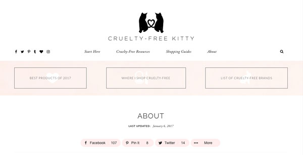

This website describes itself as "A social learning community for Berkeley staff professional and career development, with stories, advice, tips, and resources". I like the idea of a website created for a community that allows users to have specific input on issues that are present today. The website allows the users to look at articles, take polls, and even write blogs themselves. My favorite part about this website is the idea of taking polls- I think polls are interesting because it is an easy way to get information on topics from a wide range of people. This made me think about the starbucks Wifi login page, because there it asks a question in a poll and you can see the results immediately- usually the questions are light hearted and fun like "what kind of music do you listen to when you're on a road trip?". This relates back to my idea of "coffee break"- I think it would be interesting to have a website/app that allows users to engage in polls that are more serious and political. Perhaps it would be a new poll every day that people could quickly open on their iphone and answer while they are drinking their coffee in the morning.
This website analyzes makeup companies in regards to their ethical practices and reports their findings on their website. They also tell the consumer which stores to shop at, what products are cruelty free, and which products they reccomend. The website is regularly updated with new information regarding makeup companies and their practices. I like the asthetic of this companies website, it is friendly and inviting yet clean and modern. I think it is a good example of a website that adresses the public (not companies) and informs them in an easy and comfertable way. I like how it is formated somewhat like a blog- it has updated posts beneath the navigation bar. The only problem I have with the website setup is that it has two navigation bars, which to me is confusing. Overall, I think this website serves as a good example of a site that adresses a problem and informs the public of the problem, in a friendly and productive manner. 